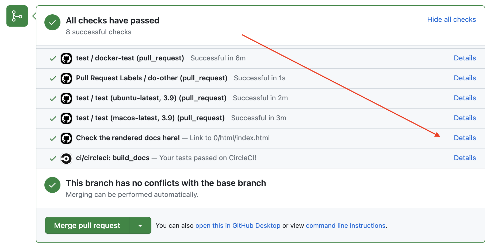
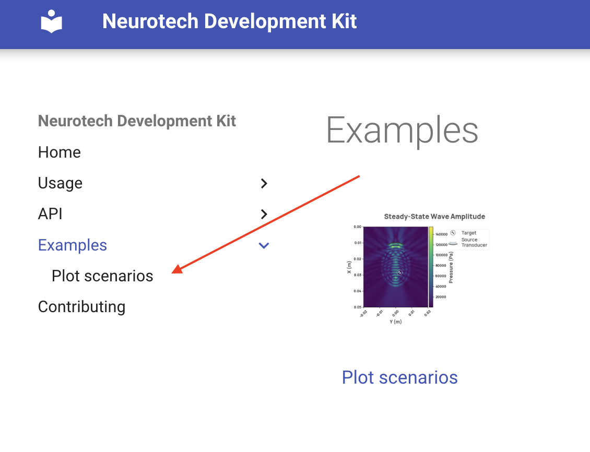

You can contribute to NDK by creating GitHub issues or by submitting pull requests.
Reporting issues
Feel free to open an issue if you would like to discuss a new feature request or report a bug. When creating a bug report, please include as much information as possible to help us reproduce the bug as well as what the actual and expected behavior is.
Contributing code
Standards
To ensure efficient collaborative development, a variety of standards are utilized in this project.
Run the container, which will start a jupyter notebook server:
docker compose up
Connect to the jupyter notebook directly in your browser or with your IDE.
Running locally
This project requires Python >=3.9 and <3.11 to be installed. You can find the Python version you have installed by running python --version in a terminal. If you don't have Python installed or are running an unsupported version, you can download a supported version from python.org.
We use poetry to manage dependencies and virtual environments. Follow the instructions from poetry's documentation to install it if you don't have it on your system.
Install the dependencies by running the following command in a shell within the project directory:
poetry install
This will resolve and install the dependencies from poetry.lock and will install the neurotechdevkit package in editable mode.
If you are not already using a virtual environment, poetry will create one for you by default. You will need to use this virtual env when using or working on the package.
Activate the environment directly via:
poetry shell
If you are already using your own virtual environment, you should not need to change anything.
Code requirements and conventions
Note
The following commands require GNU make to be installed, on Windows you can install it with Chocolatey:
choco install make
Before opening a pull request, please make sure that all of the following requirements are met:
all unit and integration tests are passing:
make test
the code is linted and formatted:
make lint
type hinting is used on all function and method parameters and return values, excluding tests
We use the release on push github action to generate the new version for each release. This github action generates the version based on a pull request label assigned before merge. The supported labels are:
release-patch
release-minor
release-major
norelease
Automatic release
Merged pull requests with one of the labels release-patch, release-minor or release-major will trigger a release job on CI.
The release job will:
generate a new package version using semantic versioning provided by release on push
Running these scripts is a resource intensive and time consuming task, for this reason we are using CircleCI instead of Github Actions (as we can choose a more powerful machine to execute the job).
Checking NDK documentation on CI
All pull requests trigger a CI job that builds the documentation and makes the built files available.
To check the generated documentation in a pull request:
Scroll to the bottom of the page and click on the Show all checks link.
Click on the details link of the Check the rendered docs here! job.

Note
The Examples section is not properly rendered when the documentation is built
on CI. The links of the thumbnails in gallery/index.html point to broken paths,
in order to check one of the examples you will have to click on the left panel,
as shown in the image below:

Within each example, the outputs of cells are also not properly displayed.